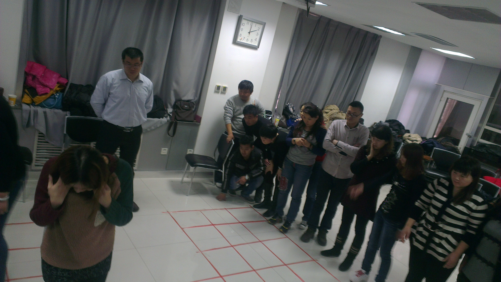

中层执行思维工作坊
课程设置背景
随着企业规模的不断扩大，人员的不断增加，你是否感觉到管理变得力不从心、越来越吃力? 管理的内耗越来越大，部门和上下级之间经常出现关系危机。大家都明白执行的重要，但就是有些时候、有些事情总是执行不到位，或者不那么让人满意。在很多时候培训过后、安排过后，却难以将新的工作落实到位，不能长期保持效果。本课程解决中层管理的执行观念和执行方法的问题，让中层学会如何进行有效的落地实施以。
课程收益：
1、建立中层管理团队的执行意识和思维模式。
2、感受组织执行与个人管理的之间的关系。
3、正确认识管理执行的角色变化以及正确分工。
4、了解影响执行的几个核心要素。
5、强化中层管理能力与执行力推进发展。
教学方式
讲授、互动、引导、讨论、分享、案例
课程时长
6小时
课程对象
企业中高层管理人员，30-40人为佳
课程纲要：
第一篇 剖析与认知
1、剖析审问：公司的核心竞争力是什么？
通过提问引发学员思考，发现差距，找到企业定位。
2、剖析审问：公司发展面临的最大挑战是什么？
引发思考，我们需要解决的问题，以及我们现有解决问题的能力。
3、企业发展的斜坡理论（讨论与共创）
学员通过讨论，自己动手绘制企业发展的动力图，深化理解企业发展的几个核心要素以及关键影响力。
4、企业发展的加速度理论（讨论与共创）
通过发问，促使学员理解执行力在企业发展中的关键作用。
5、管理者的角色
（1）角色思维的转换
（2）短片解析：管理者的角色思维与影响力
（3）管理者的纵向分工
（4）中层的定位——资产与负债
（5）中层的作用——放大镜作用
第二篇 心智模式
1、什么是心智模式
2、执行力落地的核心三角理论
3、保障执行的7个关键点
（1）第一次现象
（2）MOT关键时刻
（3）关键控制点
（4）责任接口点
（5）奖励处罚点
（6）问题冲突点
（7）焦点问题点
4、中层不执行的三大危害
第三篇 措施与行动
1、沟通从心开始
游戏体验：纸片的语言
通过体验游戏促使学员意识到在管理中各角色的重要作用，沟通对执行的影响，反思自己在工作中的沟通问题。
2、目标与时间管理
3、制度执行——“4R工具”
R1——结果定义
R2——一对一责任
R3——过程检查
R4——即时激励
许辰老师版权所有©2015